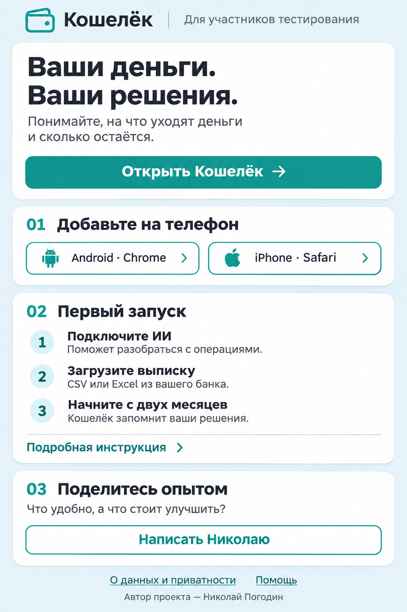

Политика конфиденциальности
Сначала откройте Кошелёк в браузере телефона. Ниже — схема действий; вид меню может отличаться.
Если ссылка открылась внутри мессенджера, сначала откройте её в Chrome или Safari.
Gemini поможет разобрать операции. Ключ — персональный код доступа к ИИ Google, а не пароль от банка.
Откройте Google AI Studio, создайте API-ключ и вставьте его в поле подключения Gemini в Кошельке.
Проверьте тарифы и квоты Google. Не отправляйте ключ в сообщения или диагностику.
Скачайте CSV или Excel (.xls, .xlsx) из банка. Можно сразу за весь период. PDF и снимок экрана для импорта не подходят.
В интернет-банке откройте «Выписка по счёту», выберите счёт, период и экспорт CSV.
Выберите валютный счёт → «Ещё» → «Выписка». Укажите период и формат Excel, затем сохраните файл.
Подтвердите категории. Затем примените изученные правила к остальной истории. Повторных вопросов станет меньше.
Рабочие данные сохраняются в браузере. Перед его очисткой проверьте синхронизацию.
При подключённой синхронизации копия сохраняется в папке приложения на вашем Диске.
При использовании ИИ данные запроса передаются Google: например, получатели, назначения платежей, текст или фото чека. Уберите с фото лишние личные сведения.
Условия обработки зависят от региона. Для ЕЭЗ, включая Латвию, предусмотрены правила без использования запросов и ответов для улучшения продуктов Google, в том числе для бесплатной квоты. Условия отдельно требуют Paid Services при предоставлении приложения пользователям ЕЭЗ.
Условия Gemini API
Журнал отправляется добровольно. Перед пересылкой удалите личные сведения и API-ключи.
Опишите, что было удобно или на каком шаге возникла трудность.
Вставьте сообщение в ваш чат с Николаем. Отправка из флайера не выполняется. Скриншот можно приложить отдельно.
Для установки откройте её в Chrome на Android или Safari на iPhone. В меню мессенджера выберите «Открыть в браузере».
Напишите Николаю, что хотели сделать и что произошло.
Настройки → О программе и диагностика → Скопировать журнал для разработчика.
Просмотрите содержимое перед отправкой. Удалите личные сведения и ключи.